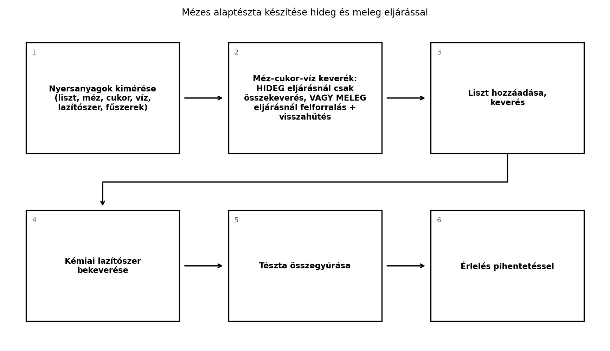

A mézes tészta készítésekor a legfontosabb kérdés, hogy hidegen kevert masszából vagy felforralt mézes-cukros alapból dolgozunk, mert ez határozza meg a tészta állagát, színét, aromáját és a későbbi formázhatóságot. Ha ezt elvétjük, a mézeskalács lehet ragadós, egyenetlenül kelő vagy hamar kiszáradó.
A hideg és a meleg eljárás abban különbözik, hogy a méz–cukor–víz keveréket csupán összekeverjük, vagy először felforraljuk és lehűtjük. A forralás a cukrot teljesen feloldja, a mézet jobban bekeveri, és sötétebb, aromásabb tésztát ad; a hideg eljárás gyorsabb, de a kristálycukor szemcséi megmaradhatnak.

A folyamatábra 2. lépése a két, egymást kizáró utat foglalja össze: vagy a hideg, vagy a meleg eljárást választjuk, a hidegen kevert masszát utólag nem forraljuk fel. A két út tehát csak a méz–cukor–víz keverék kezelésében tér el; utána a lisztet és a lazítószert már hasonlóan dolgozzuk be. A meleg eljárásnál a felforralt masszát mindig le kell hűteni, mielőtt a liszthez keverjük.
A mézes tészták közös jellemzője, hogy a folyadék egy részét vagy egészét méz adja, és az édesítést mézzel, cukorral vagy ezek keverékével oldjuk meg. A tésztát kémiai lazítószerekkel lazítjuk, nem élesztővel.
Definíció. Mézes tészta. A mézes tészta olyan sütőipari tészta, amelyben a nedvesítő- és édesítőanyagok között jelentős mennyiségű méz szerepel, és a lazítást jellemzően kémiai lazítószerek – például szalalkáli, szódabikarbóna, hamuzsír vagy sütőpor – végzik. A tészta hosszabb érlelés után formázható, sütve mézeskalács vagy mézes sütemény lesz belőle.
A mézes tészták két nagy csoportját különböztetjük meg a massza hőkezelése szerint:
Megjegyzés. Az egyszerű mézeskalács kevesebb mézzel, több cukorral készül; a hagyományos mézeskalács magasabb méztartalmú, hosszabb érlelésű, több fűszerrel, és gyakran díszített. A pontos arányok üzemenként és termékenként változnak.
Megjegyzés – a lazítószer helye az eljárásban. Két eljárásváltozatot különböztetünk meg. (a) Egyfázisú, rövid érlelésű tészta (néhány óra, legfeljebb 1–2 nap): a lazítószert a tésztaképzés végén dolgozzuk be, ahogy az alábbi lépések leírják. (b) Hagyományos, hosszan (több napig) érlelt tészta: a mézes tésztarész lazítószer nélkül érik, és a lazítószert az érlelés utáni összegyúrásnál dolgozzuk be, ahogy az Érlelés, lazítás, összegyúrás és ízesítés alfejezet leírja. A technológiai lapon mindig jelöljük, melyik változatról van szó.
A hideg eljárás előnye a gyorsaság és az egyszerű eszközigény. Hátránya, hogy a kristálycukor nem oldódik fel teljesen a tésztában, ezért a felület sütés közben foltossá, a tészta enyhén szemcséssé válhat.
Eljárás hidegen, lépésenként
Minőségi ellenőrzés. A kész hideg tészta enyhén kemény, de nem száraz; a felülete nedvesen fénylő; a cukorszemcsék tapinthatók lehetnek. A tésztahőmérséklet nem haladja meg a 20–22 °C-ot, különben a méz miatt ragadóssá válik.
A meleg eljárás során a méz–cukor–víz keveréket felforraljuk. A forralás célja a cukor teljes feloldása, a méz homogenizálása, a fűszerek aromaanyagainak kioldása, valamint a tészta barnább színének kialakítása. A főzött massza hűtése után a liszt sikérje nem károsodik, ha a hőmérséklet megfelelő.
Eljárás melegen, lépésenként
Definíció. Főzött mézes tészta. Olyan mézes tészta, amelynél a mézet és a cukrot vízzel vagy tejjel felforralják, majd lehűtve keverik a liszthez. A „főzés” tehát a mézes-cukros masszára vonatkozik, nem a kész tésztára.
Definíció. Nyers mézes tészta. Olyan mézes tészta, amelynél a mézet, cukrot és vizet hidegen, forralás nélkül keverik össze a liszttel és a lazítószerrel.
A cukortészta a mézes tészták világosabb, gyakran keményebb változata, amelyben a méz egy részét vagy egészét kristálycukorral helyettesítik. A hagyományos mézeskalácsos gyakorlatban a cukortészta a fehér mézeskalács, a díszítőelemek vagy a mézeskalács-figurák alapja, mert világosabb héjat ad és jól tartja a formát.
Jellemzők. A cukortészta kevesebb mézet tartalmaz, ezért kevésbé ragadós, világosabb színű, de hajlamosabb a száradásra. Az édességet főként cukor adja, ezért a tészta ozmotikus hatása erősebb: jobban véd a mikrobákkal szemben, de sütés közben hamarabb barnulhat a felülete.
Készítése. A cukortésztát általában meleg eljárással készítik: a cukrot vízzel felforralják (szirupot készítenek), majd lehűtve adják hozzá a lisztet. A mézet csak ízesítőként, kis mennyiségben adják hozzá a sziruphoz. A régi elnevezés: „cukros tésztarész”.
Gyakorlati megjegyzés. Ha a recept csak „mézeskalácstészta” néven szerepel, de kevés benne a méz, akkor valójában cukortészta jellegű. A technológiai lapon mindig tüntessük fel a méz és a cukor arányát.
A mézeskalácsos munkában – különösen a hagyományos figurás termékeknél – a díszítéshez és az összeállításhoz segédtésztákat használtak.
Vizes tészta. Ez egy egyszerű liszt–víz tészta, amelyet tojás vagy zsiradék nélkül készítenek. Kis mennyiségben, frissen használják, mert gyorsan szárad. Szerepe a mézeskalács díszítőelemek, például apró virágok, levelek, keretek rögzítése, valamint a figurák összeragasztása. A vizes tészta felvitelekor a felületet enyhén benedvesítik, és az elemeket óvatosan rányomják.
Méhviaszos perkli. A régi mézeskalácsos szaknyelvben perklinek nevezték azt a kemény, fényes tésztát, amelyhez méhviaszt kevertek. A méhviasz rugalmassá és formázhatóvá tette a tésztát, ezért aprólékos minták nyomására, formázására használták.
Előírás. A méhviasz élelmiszerrel érintkező vagy élelmiszer-összetevőként való felhasználása csak akkor megengedett, ha az anyag megfelel az élelmiszer-adalékanyagokra vagy az élelmiszerrel érintkező anyagokra vonatkozó uniós szabályoknak (pl. 1333/2008/EK rendelet, 1935/2004/EK rendelet – ellenőrizendő: a méhviasz konkrét élelmiszer-engedélye). A mai gyakorlatban a méhviaszos perkli ritka; ha használják, ellenőrizni kell az anyag élelmiszeripari tisztaságát és a gyártói adatlapot.
Figyelem. A méhviaszos tésztát nem szabad összetéveszteni a paraffinnal vagy más nem élelmiszeripari viasszal. Csak élelmiszeripari méhviasz használható, és a pontos adagolást a technológiai lap rögzítse.
Cél: egyszerű, hideg eljárással készült mézes alaptészta összeállítása mézeskalács termékekhez. A tésztát ezután érleljük, majd formázhatjuk és süthetjük (lásd a későbbi alfejezeteket).
Eszközök és anyagok: digitális mérleg, nagy keverőtál, fakanál vagy spatula, kézi vagy gépi dagasztó, letakarásra fólia, mérőpohár. Nyersanyagok a technológiai lap szerint.
Higiénia. A művelet előtt tiszta munkaruhát, hajhálót veszünk fel, ékszert nem viselünk, kezet mosunk. A munkafelületet és az eszközöket fertőtlenített állapotban ellenőrizzük. A mézet és a cukrot csak tiszta, élelmiszeres edénybe mérjük. A lazítószerrel dolgozó eszközt használat előtt és után mossuk.
Gépbiztonság. Ha dagasztógépet használunk, a gépet csak betanítás után, felügyelettel kezeljük. A dagasztókar vagy spirál csak a védőrács felhelyezése után indítható. A gépet kézzel soha ne nyúljuk a forgó részhez. Tisztítás és a tészta levétele előtt a gépet állítsuk le, áramtalanítsuk, és várjuk meg, amíg a mozgó rész teljesen megáll.
Számozott lépések
Ellenőrzési pontok. A tészta tömege egyezzen az anyagnormával (a számítás szerint). A szalalkáli ne maradjon csomós; a csomókat ujjal szétmorzsoljuk vagy a száraz anyaghoz előre átszitáljuk. A tészta hőmérséklete ne haladja meg a 22 °C-ot.
Dokumentálás. A gyártási naplóba rögzítjük a dátumot, a tétel számát, a felhasznált anyagok tömegét, a tésztahőmérsékletet és az érlelés kezdetének időpontját. Ha a HACCP-terv megköveteli, a mérési lapra is feljegyezzük.
Termék: hagyományos mézeskalács alaptészta (főzött
mézes tészta)
Tétel: kb. 1,8 kg tésztához, 1,000 kg lisztre
vetítve
Darabszám: a tésztát később osztják; a technológiai lap
a tészta szintjén adja meg az adatokat.
| Nyersanyag | Lisztre vetített % | Mennyiség (kg) | Megjegyzés |
|---|---|---|---|
| Búzaliszt BL 55 | 100,0 | 1,000 | szitálva |
| Kristálycukor | 35,0 | 0,350 | a masszához |
| Méz | 30,0 | 0,300 | folyékony, nem kristályos |
| Víz | 18,0 | 0,180 | forraláshoz; a veszteség pótlására +0,020 |
| Szalalkáli | 0,8 | 0,008 | kémiai lazítószer (tanulási példa, ellenőrizendő: gyártmánylap) |
| Őrölt fahéj | 0,8 | 0,008 | a masszához |
| Őrölt szegfűszeg | 0,2 | 0,002 | a masszához |
| Összesen | – | kb. 1,848 | forralás előtt; a tényleges tésztatömeg a vízveszteségtől függ |
Műveleti paraméterek
Allergén. A receptúrában búzaliszt (glutén) van jelen. A fűszerkeverékek – ha nem ellenőrzött, tiszta fűszerek – nyomokban tartalmazhatnak zellert, mustárt vagy szezámot; ezért minden fűszer beszállítói adatlapját ellenőrizni kell. Ha a mézeskalácshoz diót, mandulát vagy tojásos cukormázat használnak, azok további allergének, és a keresztszennyeződést – például közös eszköz, munkafelület – külön kell kezelni. A „gluténmentes” állítás ezen a terméken nem alkalmazható.
HACCP- és minőségi pontok
1. példa – Hideg mézes tészta tömegének
kiszámítása
Adott: 1,000 kg liszt, 0,300 kg méz, 0,350 kg cukor, 0,150 kg víz,
0,008 kg szalalkáli, 0,010 kg fűszerek. Keresett: a tészta tömege a
hideg eljárásnál.
Számítás:
Ellenőrzés: az összetevők összege 1,818 kg; a tésztahozam a lisztre
vetítve
,
ami reális mézes tésztánál. (A tésztakitermelés ettől eltér:
,
mert csak a lisztet és a vizet számolja; a mézes tészta folyadékának
nagy részét a méz adja.) ∎
2. példa – Vízpótlás a meleg eljárásnál
Adott: a forralás előtt a masszában 0,180 kg víz van. A forralás után a
massza tömege a vízveszteség miatt 0,020 kg-mal kevesebb. Keresett:
mennyi vizet kell utánaönteni, hogy a folyadékarány a technológiai lap
szerinti maradjon?
Számítás: a forralás után a masszában maradt víz
.
A technológiai lap 0,180 kg vizet ír elő; a hiány
.
Tehát 20 g vizet kell hidegen hozzáadni, miután a masszát lehűtöttük
35 °C alá.
Ellenőrzés: ha a massza tömege a forralás után csökken, a liszt
hozzáadása előtt a folyadékfázis tömegét visszamérjük és pótoljuk; így a
tésztatömeg nem tér el nagyban az előírtól. ∎
Egy kis pékségben a mézeskalács-szezonban a hagyományos mézes tésztát meleg eljárással készítették. Az egyik tanuló a forró masszát közvetlenül a liszthez öntötte, mert sietett. A tészta rögös, csirizesedett lett, a szalalkáli nem oszlott el egyenletesen, és sütés közben a termékek egyenetlenül keltek, erős ammóniás szaggal. A hiba oka az volt, hogy a massza hőmérséklete meghaladta a 60 °C-ot, ami a lisztkeményítő csirizesedését és a lazítószer idő előtti bomlását okozta.
A helyes gyakorlat: a forralt masszát kevergetve 35 °C alá hűtjük, csak utána adjuk hozzá a lisztet, majd a lazítószert. A tanulság: a meleg eljárásnál a „főzött” nem jelenti azt, hogy a tésztát forrón kell összeállítani; a hűtési lépés technológiai és élelmiszer-biztonsági szempontból is kötelező.
A kész mézes alaptészta minőségét az alábbi jellemzőkkel ellenőrizzük:
1. feladat (A). Sorold fel a mézes tésztafélék két fő csoportját a massza hőkezelése szerint, és adj meg egy-egy jellemző tulajdonságot!
2. feladat (A). A hideg mézes tészta receptje: 1,000 kg liszt, 0,250 kg méz, 0,300 kg cukor, 0,120 kg víz, 0,008 kg szalalkáli, 0,008 kg fűszer. Számítsd ki a tészta tömegét!
3. feladat (B). A meleg eljárásnál 0,200 kg vízből forralás után 0,170 kg marad. A technológiai lap 0,200 kg vizet ír elő a masszához. Mennyi vizet kell pótolni, és mikor?
4. feladat (B). Mi a különbség a cukortészta és a hagyományos mézeskalács alaptészta között? Milyen esetben használjuk a cukortésztát?
5. feladat (C). Egy tétel hideg mézes tésztát készítünk, de a tanuló a szalalkálit a liszt előtt, a folyadékhoz keverte. Mi lesz a valószínű következmény? Mit kellett volna helyesen tenni?
6. feladat (D). A gyakorlati útmutató szerint készíts el egy kis tétel hideg mézes tésztát (pl. 0,500 kg liszttel). Mérd meg a tészta hőmérsékletét, és írd le, milyen állagúnak kell lennie a pihentetés előtt. Milyen higiéniai lépéseket tettél meg?
Önellenőrzés – válaszok
1. feladat megoldása. Nyers mézes tészta (hideg) – világosabb, kissé keményebb; főzött mézes tészta (meleg) – sötétebb, puhább, aromásabb. ∎
2. feladat megoldása.
Ellenőrzés: a lisztre vetített tésztahozam 168,6%, ami elfogadható.
∎
3. feladat megoldása. A forralás után 0,170 kg víz maradt, az előírt 0,200 kg-hoz hiányzik 0,030 kg. Ezt a massza lehűtése után, hideg vízből kell pótolni. ∎
4. feladat megoldása. A cukortésztában a méz egy részét vagy egészét cukorral helyettesítik, világosabb és keményebb; a hagyományos mézeskalács több mézet tartalmaz. A cukortésztát fehér mézeskalácshoz, díszítőelemekhez használják. ∎
5. feladat megoldása. A szalalkáli a folyadékban idő előtt bomlásnak indul, gáz fejlődik, a tészta lazítási energiája csökken, sütéskor gyenge lesz a kelés, és kellemetlen ammóniás szag maradhat. Helyesen a lazítószert utolsó összetevőként, a tésztához kell keverni. ∎
6. feladat megoldása. A gyakorlathoz a mennyiségeket a technológiai lap arányai alapján 0,500 kg liszthez kell átszámolni; a tészta hőmérséklete 20–22 °C legyen, és az állaga enyhén fénylő, nem ragadós. Higiéniai lépések: kézmosás, tiszta munkaruha, hajháló, tiszta eszközök, a munkafelület fertőtlenítése. ∎
A mézes tészták készítése lehet hideg (nyers) vagy meleg (főzött) eljárású. A nyers mézes tésztánál a méz–cukor–víz keveréket hidegen állítjuk össze; ez gyorsabb, világosabb, keményebb tésztát ad. A főzött mézes tésztánál a masszát felforraljuk, majd lehűtjük 35 °C alá, és csak ezután keverjük a liszthez; ez sötétebb, puhább, aromásabb. A kémiai lazítószert mindig utolsóként, rövid idő alatt dolgozzuk be, hogy a gázfejlődés ne induljon idő előtt. A cukortészta a méz helyett több cukrot tartalmaz, világosabb, és főleg fehér mézeskalácshoz vagy díszítőelemekhez használjuk. A vizes tészta és a méhviaszos perkli hagyományos segédtészták; a méhviasz élelmiszeripari tisztasága ellenőrizendő. A mézes tésztát mindig hűvös helyen (tanulási példa: 5–12 °C), letakarva érleljük; a lazítószer helye a rövid érlelésű és a hosszan érlelt változatnál eltér. A továbbvitt eredmény: a hideg és meleg módon készült alaptészták érlelés, lazítás, összegyúrás és ízesítés során a Mézes tészta feldolgozása és töltése, valamint az Érlelés, lazítás, összegyúrás és ízesítés alfejezetben hasznosulnak. ∎